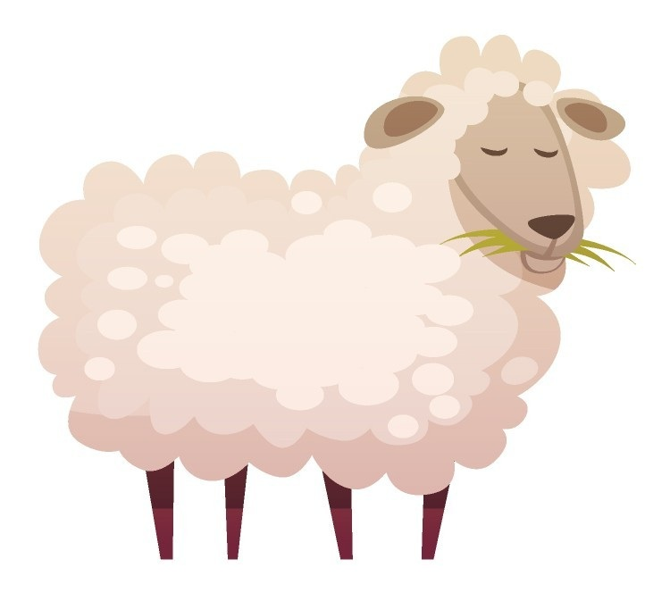

RECETA QUESO FRESCO
Objetivo: Aprender cómo el pH y la acidez afectan la coagulación de la leche y la textura del queso.
Selecciona el tipo de leche
Vaca
Cabra

Oveja
Oveja
Objetivo: Aprender cómo el pH y la acidez afectan la coagulación de la leche y la textura del queso.